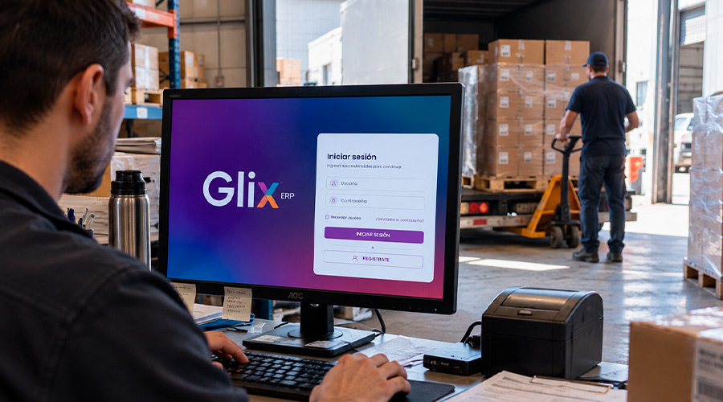
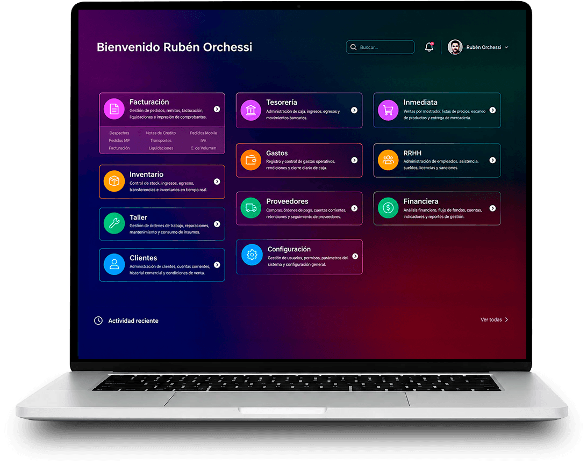
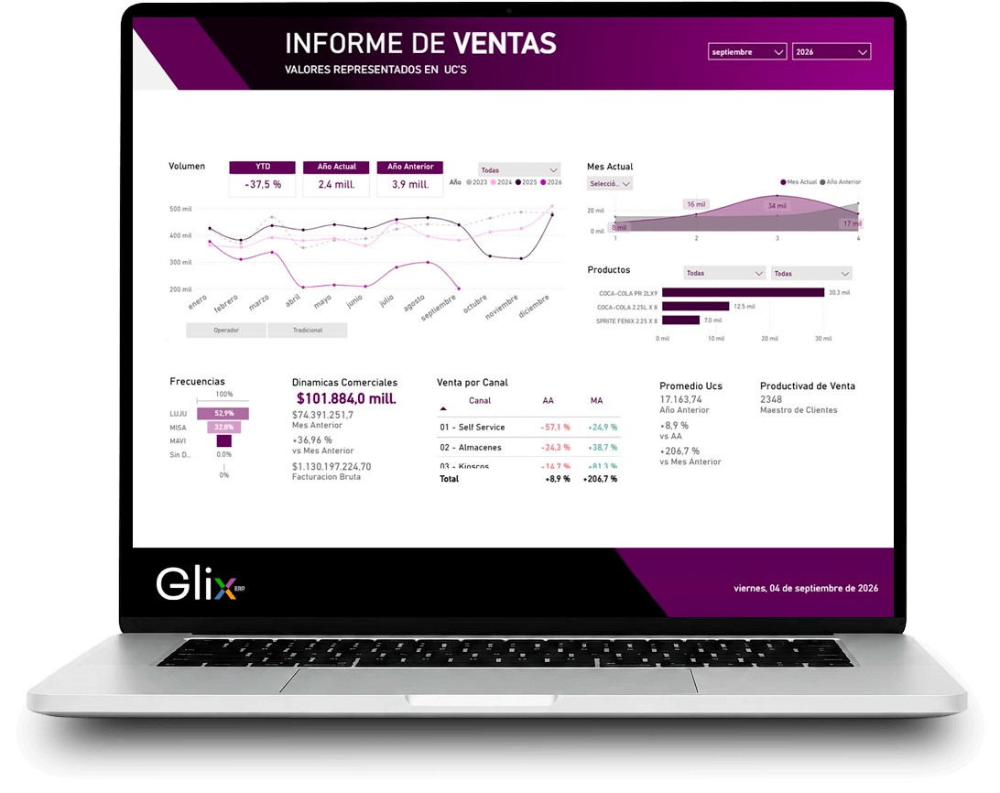
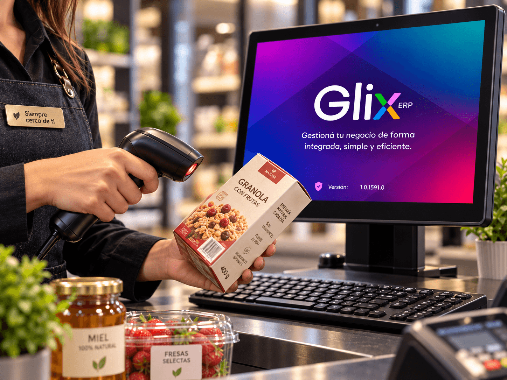
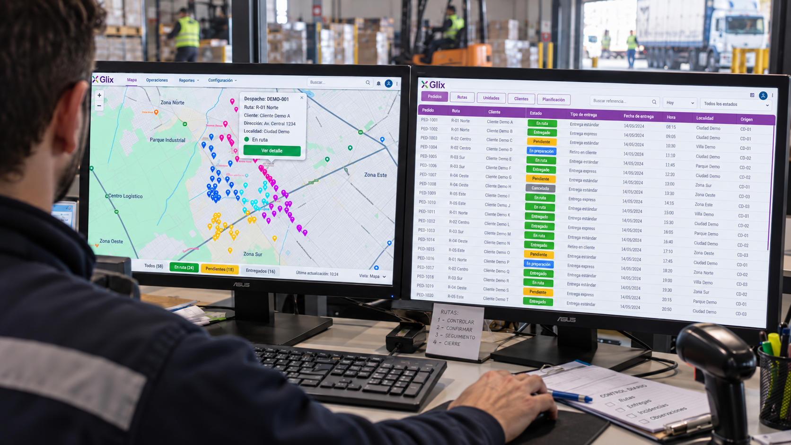
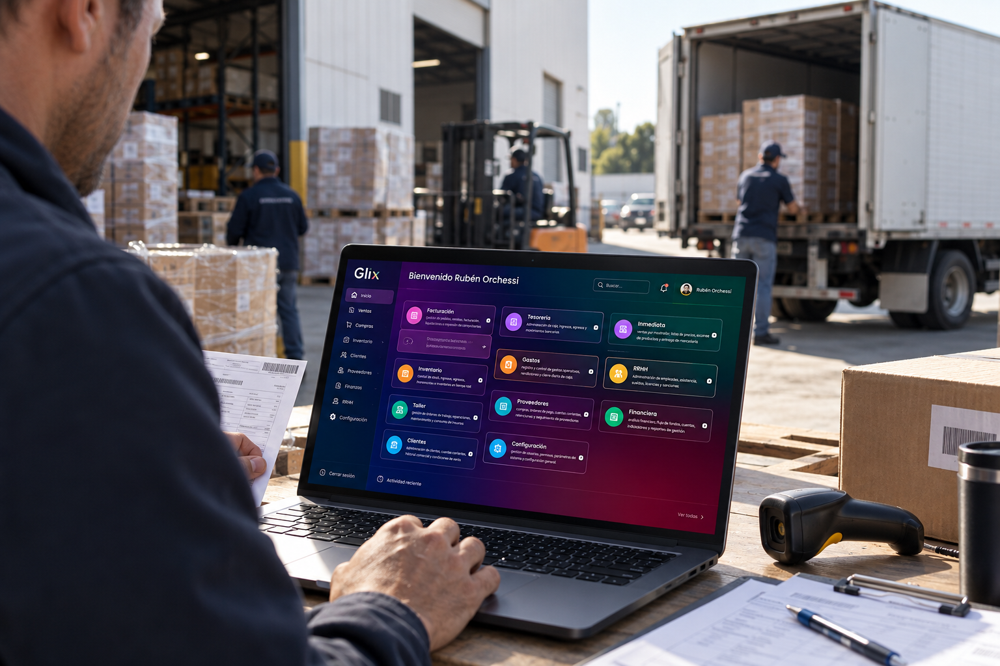
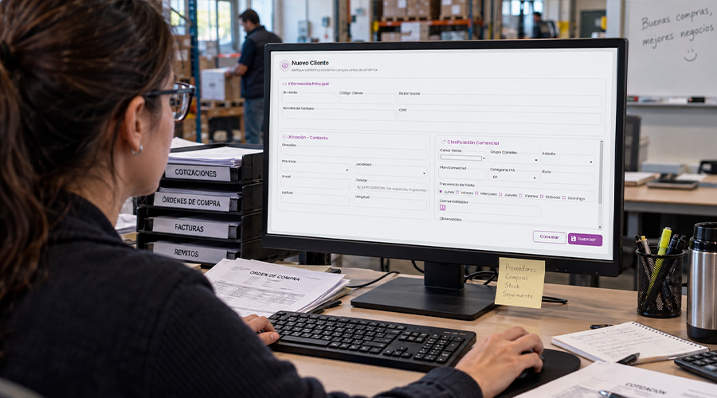
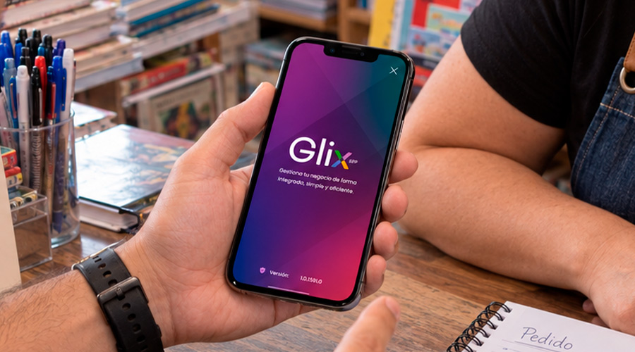
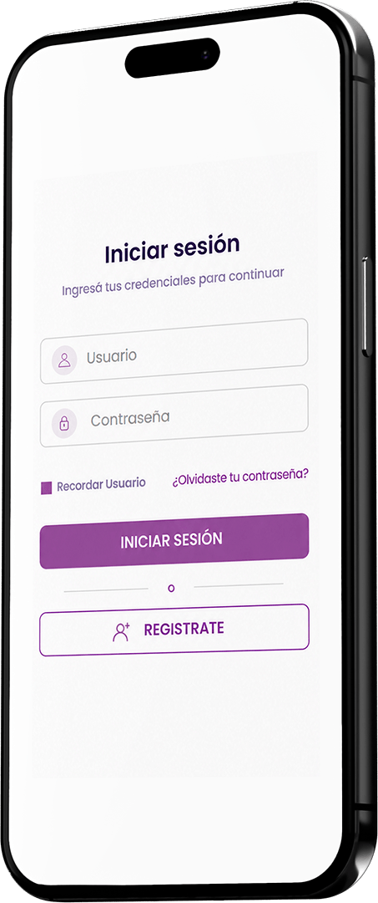

01 /⌁
Transporte y liquidación
Despachos, documentación, entregas, retornos, conciliación, transferencias y cuentas corrientes en el recorrido de cada transporte.

Ventas, logística, compras y personas conectadas en un solo lugar. GLIX ordena la información para que cada decisión tenga contexto.


Desde una venta hasta un despacho, una compra o la gestión de tu equipo. GLIX conecta los procesos del día a día para que tengas más control y una visión completa del negocio.




Herramientas para ordenar tareas, consultar datos y dar seguimiento a cada etapa de la operación.

Despachos, documentación, entregas, retornos, conciliación, transferencias y cuentas corrientes en el recorrido de cada transporte.

Ficha de proveedores, comprobantes, saldos, órdenes de pago y archivos para obligaciones fiscales.
Administración de personal, asistencias, sueldos, licencias y sanciones reunidas en un área de gestión.

Alta de clientes, geocodificación, stock en línea, venta e historial de saldos y pedidos para el equipo comercial.
GLIX conecta la información entre áreas para que cada proceso continúe donde termina el anterior, sin duplicar datos ni perder seguimiento.
Ventas, pedidos, compras, movimientos y documentación ingresan una sola vez al sistema.
Cada área consulta el estado de la operación y trabaja con la misma información actualizada.
Reportes, saldos, inventario, entregas y movimientos permiten entender qué pasó y tomar decisiones con contexto.

La app móvil de GLIX permite dar de alta clientes, geolocalizarlos y vender con stock en línea. El equipo puede consultar saldos e historial de pedidos durante su trabajo en campo.
Podemos mostrarte cómo GLIX acompaña tus procesos de gestión.
Contactar GLIX9:00 a 18:00 h